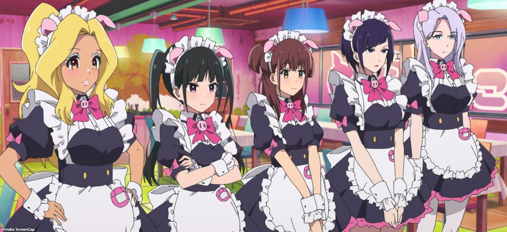

About Ranko
Ranko is a newly appointed maid at oinky doink cafe (Ton-Toko-Ton). She was recently released from prison due to a past incidient that occured in Akiba. She is a harden veteran of Akiba and understands the true nature of the seemingly moe moe ward of Tokyo. Always stoic and calm, Ranko rarely gets emotional, only when her fellow maids or noble profession are mocked does she respond in kind.
Ranko and her fellow maids at Oinky Doink Cafe
Characteristics
- She is 36 years old.
- She is skilled in baseball.
- She often uses prison jargon when she speaks, indicating that she has spent quite some time in prison and has been conditioned.
- She is skilled with weaponary, ranging from small firearms, close-quarters weaponary and un-armed combat. She is particuliary deadly in un-armed combat as she was able to swiftly defeat a military trained fighter in a MMA style match.
- She is good at ketchup doodles and like the rest of the staff at Oinky~Doink~Cafe tends to include pork related puns when speaking.
Relationships
Everyone at Oinky~Doink~Cafe holds a special place in her heart.She respects and cherishes the Oinky Doink staff and believes each and everyone of them to be amazing maids. She is willing to stickup and disobey orders for their sake, showing how much she cares for them.